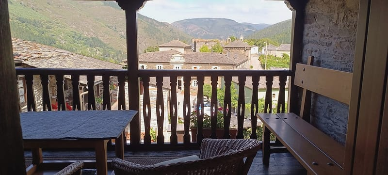
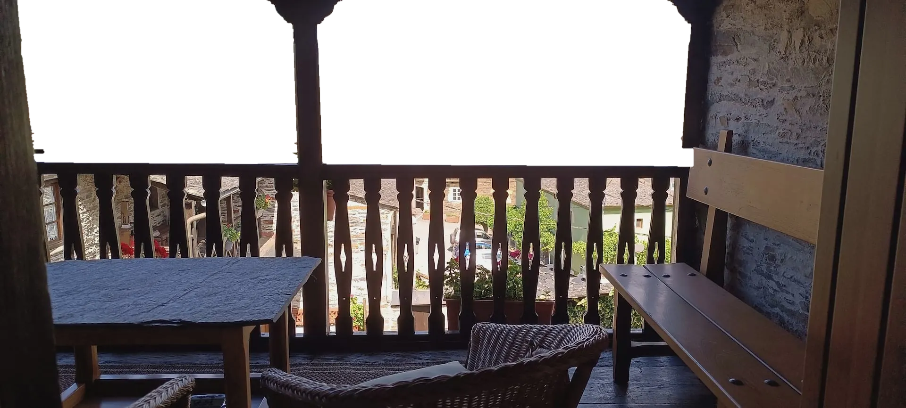
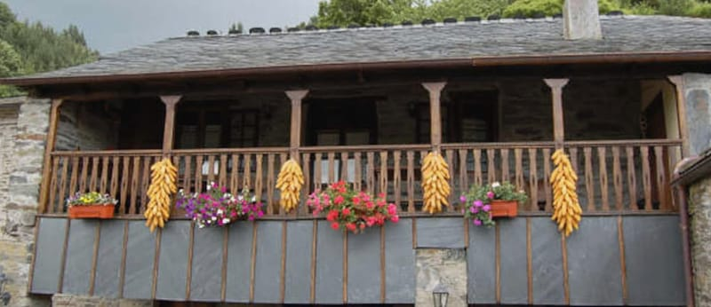
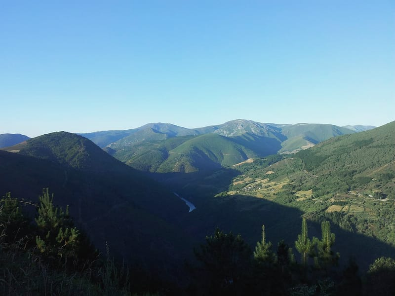
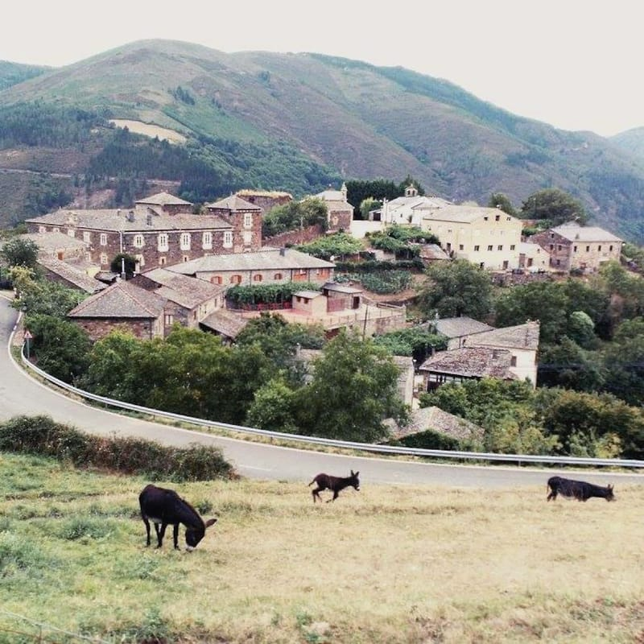
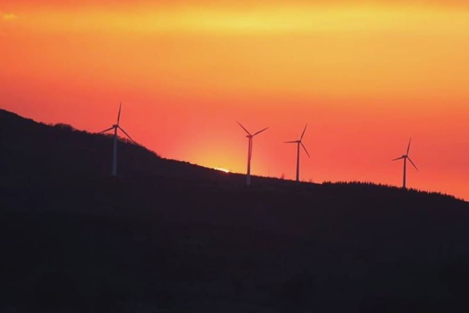
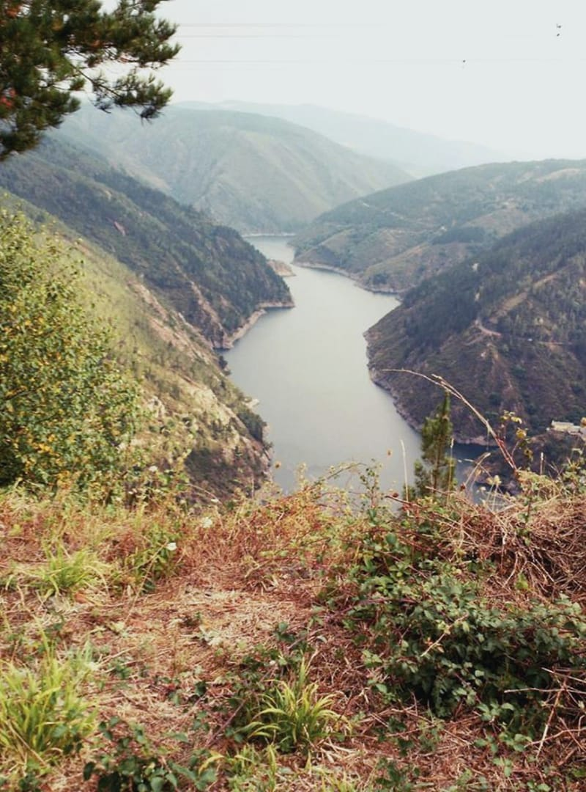
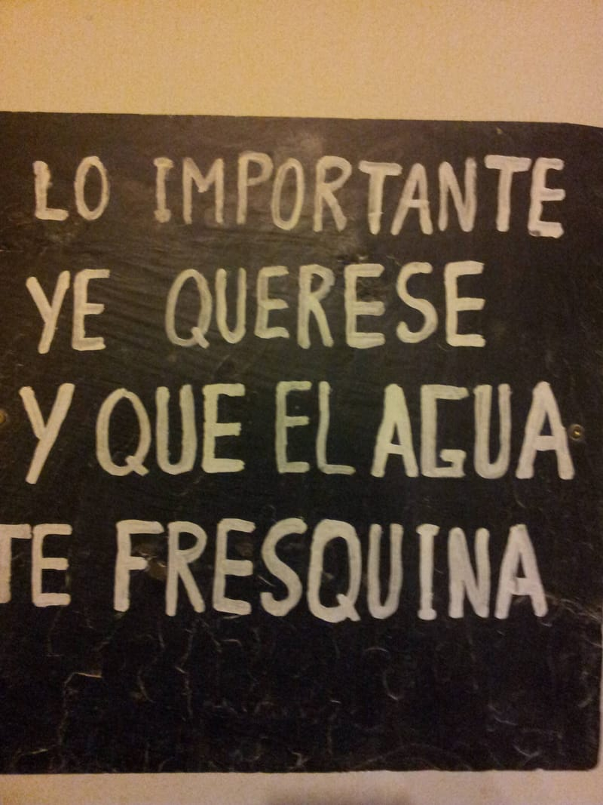

01
La sala
Comedor, salón y cocina abierta en una sola estancia, con vigas de madera en el techo y suelo de baldosas.


Casa de aldea · Pesoz, Asturias
Un pajar en Pesoz, hecho casa para cuatro
Casa entera con dos dormitorios, chimenea y este corredor: delante, el Palacio de Ron y el valle del Agüeira.
4,85 en Airbnb · 47 opiniones
Palleira significa «pajar»: la casa lo fue. Hoy es casa de aldea entera, para cuatro.

Las panoyas son las mazorcas de maíz que se cuelgan a secar en el corredor.
| Plazas | 4, en casa entera (no se alquila por habitaciones) |
|---|---|
| Dormitorios y camas | 2 dormitorios dobles y 3 camas: uno de matrimonio y otro con dos camas y televisión |
| Baño | 1, con dos lavabos |
| Servicios | Calefacción, chimenea con leña, wifi, lavadora, microondas, televisión, juegos, terraza, patio con fuente, jardín y aparcamiento gratis |
| Animales | No se admiten |
| Precio orientativo | De 60 a 70 € por noche, limpieza incluida (horquilla de Turismo Asturias) |
| Cancelación | 30 días |
| Entrada y salida | A convenir con Alejandro, el dueño |
| Dirección | El Caleyo, s/n · 33735 Pesoz (Asturias) · 985 250 581 |
| Distancias | Grandas de Salime 6,8 km (6 min) · San Martín de Oscos 13,1 km (13 min) · Navia 62,1 km (59 min) · Vegadeo 47,2 km (47 min) · A Fonsagrada 31,6 km (32 min) · Lugo 91,9 km (1 h 27 min) · Oviedo 147,5 km (2 h 13 min) · Madrid 535 km (6 h 12 min). Por carretera, calculado con OpenStreetMap. |
Dentro
Una sala con comedor, salón y cocina abierta, dos dormitorios y un baño. Pulsa una foto para verla grande.
01
Comedor, salón y cocina abierta en una sola estancia, con vigas de madera en el techo y suelo de baldosas.
02
Está en un marco de ladrillo, junto a la pared de piedra. La leña está incluida y la calefacción funciona el resto del tiempo.
03
Uno de matrimonio y otro con dos camas y su televisión: cuatro plazas en total.
04
Uno solo, con dos lavabos.
05
El corredor de madera tiene suelo de pizarra, un banco y butacas. La terraza tiene vistas. En el patio, entre plantas, están la fuente y la mesa de merendero.
Alrededor
Pesoz es uno de los concejos con menos vecinos de Asturias: 134, según el INE. Esto es lo que hay a mano si te quedas por aquí.
Del siglo XVII, con cuatro alas alrededor de un patio; la fachada se reformó en 1909. Alguna fuente lo llama Palacio de Monteserín. Se ve desde el corredor.
En el concejo: la iglesia de Santiago, los castros de Santa Cruz y de San Isidro y el Parque Histórico del Navia.
Los ríos Agüeira y Navia, y el embalse de Grandas de Salime con las vistas desde A Paicega (a 5,7 km por carretera, 11 min).
Grandas de Salime (a 6,8 km por carretera, 6 min) y San Martín de Oscos (a 13,1 km por carretera, 13 min) son los pueblos vecinos.
Las playas del occidente de Asturias y de la Mariña lucense, para un día de mar. La más cercana de las calculadas: Playa de Peñarronda (Castropol), a 58,1 km por carretera (58 min).
Pesoz fue siempre concejo de viñas: aire seco, a resguardo de la brisa del mar.




Distancias y tiempos por carretera hasta la casa: OSRM sobre datos de OpenStreetMap (© colaboradores de OpenStreetMap), 28 de octubre de 2026. Habitantes: INE, padrón a 1 de enero de 2025.
Pesoz está en el occidente de Asturias, en el valle del Agüeira, entre Grandas de Salime y San Martín de Oscos. Se llega por carretera desde Oviedo, Lugo, Navia, Vegadeo, A Fonsagrada, Pola de Allande y Madrid; el mapa dibuja cada ruta con su tiempo y sus kilómetros.
La dirección
A Palleira · Casa de AldeaLas coordenadas de las fuentes no coinciden entre sí: el mapa es orientativo hasta confirmar la puerta con Alejandro.
Opiniones
4,85de 5 en Airbnb47 opiniones
Datos de Airbnb a 28 de octubre de 2026.
Reservar
Casa entera para hasta cuatro personas. Elige las noches y cuántos venís. Si lo prefieres, llama al 985 250 581: se reserva con Alejandro.
Demostración. Así podría funcionar la reserva directa: las noches ocupadas son de ejemplo, los precios son supuestos y no se envía, no se guarda ni se cobra nada.

Lo importante ye querese
y que el agua te fresquina
Está escrito en la pizarra de la casa.